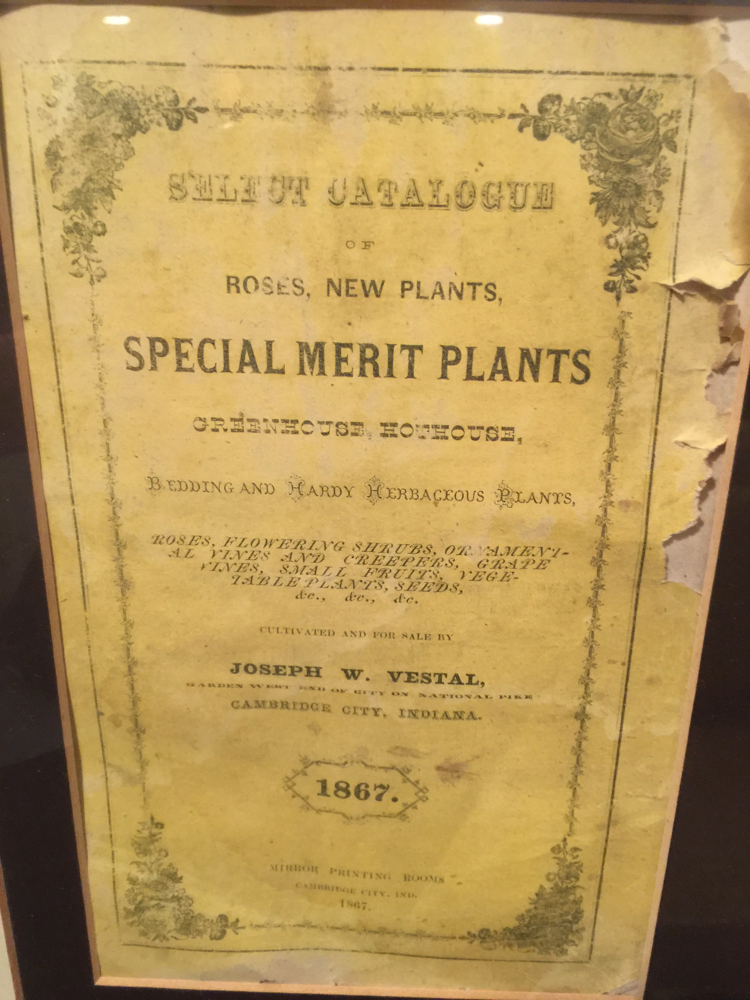

Joseph Wysong Vestal (1833-1917), a Quaker horticulturist, commenced one of the first U.S. mail order catalog businesses in 1861, offering a diverse range of live plants, flowers, and seeds to a national market from Cambridge City, Indiana. Seeking both a warmer climate and more favorable shipping radius, as well as welcoming the abolition of slavery, Joseph decided Little Rock was the ideal relocation choice for his thriving floral business. Beginning in 1879, Vestal then became one of the largest greenhouse ranges and nursery operations in the U.S., shipping cut flowers and plants nationwide for more than 100 years.
Over the decades, successive Vestal horticultural generations were led by family members as follows:
On October 7, 1880, the Arkansas Democrat
reported:
Mr. J.W. Vestal, of Cambridge City,
Indiana...left for the north on last evening's
train. He has put everything into shape and
will be back shortly with his family, after
which Arkansas instead of Indiana will be
his home. This gentleman is one of the most
extensive flower and bulb growers in the
west. He has made shipments east to New
York and west to Omaha, and sent car loads
of flowers to Chicago and St. Louis. He comes
to Arkansas on account of the mild winters,
and at the same time has taken advantage of
the low prices and bought an extensive tract
of land for his gardens. Already two very large
greenhouses have been erected, and by next
summer Mr. Vestal intends that his gardens
shall be to Little Rock what Shaw's is to St.
Louis. His intentions are to have a good drive
made in order that people from the city may
find it a pleasant ride as well as beautiful
sight. He has no doubt of his success in this
enterprise, having already contracted for the
delivery of a great many oar loads of plants.
With the notation of "Re-Established at Little Rock, 1881," Joseph continued publication of the annual catalog of "Select, New, Rare, and Beautiful Plants; Roses."
Indicating the depth and diversity of all plant offlerings, the 1890 catalog listed the following number of varieties as well as specific descriptions of each individual variety:
For local sales, Joseph offered potato and vegetable starts, grapes, fruits, berries, whole chickens and eggs, seeds, and cut flowers.
Unlike his father Joseph, and older brothers, George and Frank, with their combined focus on horticulture, Charles specialized in business operations, sales, and marketing. Charles took immediate steps to upgrade the annual retail catalogs and, in 1892, published the first known color catalog west of the Mississippi River. Charles organized a new much larger power plant for greenhouse heat and built the first levees along the river to protect from floods, all in the early 1890s.
According to the 1914 printing contract, Vestal & Son were mailing at least 50,000 catalogs of 80 pages each to worldwide customers. By 1918, Charles had increased the greenhouse acreage by four-fold. The highly stylized business letterhead proclaimed "We employ no agents but sell to you direct by mail; Jos. W. Vestal & Son; Growers, Importers and Dealers in Roses, Bulbs, Plants, Evergreens, Seeds, Etc.; Wholesale and Retail."
Following the 1928 death of Charles Vestal, the business changed from primarily supplying mail order retail customers to supporting the regional wholesale market of florists, nurseries, and other retailers, under the third-generation leadership of Charles Howell Vestal (1896-1954)
In 1928, "commercial greenhouse crops were started, and the era of the wholesale florist began to come about." The Depression was perhaps then responsible for the first wholesale and retail business losses since inception." In 1932 the active list of retail customers reached to 75,000. By 1935, it dropped to 15,000."
"Vestal gave a cheerful air to any company. Always a smile lighted his face immediately when he saw somebody he knew. His good humor was contagious. He practically was reared in the Vestal greenhouse. On his father's death, he and his brother, Walter, took over the business, and under their management the oldest florist enterprise in Arkansas expanded and flourished even more. They moved from the retail into the wholesale trade, making the firm known all over the United States. Once he remarked of his business, 'You never get tired of this work, because you are always striving for perfection.' Continuous strivitig was characteristic of him. He sought perfection not for material reward but for the satisfaction of putting forth effort to make things better tomorrow than they were today." Arkansas Gazette
After returning from Ohio State University in the early 1950s, Kent Greer Vestai (1933-2006) joined J.W. Vestal & Son as the upcoming fourth-generation leader.
The fourth-generation actors brought their own preferred market directions, while facing new forms of competition and an internal split of assets. With less focus on developing plant genetics and the increased use of proprietary cuttings of others such as Ecke and Yoder, the greenhouse growing efforts began shifting from flowering crops to the grow-out of seasonal pot plants such as poinsettias, mums, and Easter lilies. With the advent of air freight and the interstate highway system, the Vestal wholesale florist business expanded to include daily offerings of flower crops grown in California and Colorado and a full range of retail florist supplies to regional florists through Vestal wholesale locations in North Little Rock, Fort Smith, Texarkana, and Memphis.
In 2001, Sarah Anne Vestal developed, constructed, and successfully operated the first U.S.D.A. certified organic greenhouse range in the U.S., near Sheridan, Arkansas, growing beefsteak tomatoes year round for premium retailers such as Kroger's and Whole Foods.
In 2014, Sarah was named as the national cannabis expert for the Internal Revenue Service due to her case work in Northern California bringing cannabis growers into compliance with federal taxation laws. Moving back to Little Rock, Sarah was instrumental in the campaign for cannabis legalization in Arkansas and, in 2016, was named Woman Entrepreneur of the Year by The Arkansas Times for her efforts.
| Generation | Name | Birth-Death | Years of Service | Education |
|---|---|---|---|---|
| 1st | Joseph W Vestal | 1833-1917 | 63 | Unknown |
| 2nd | Charles Vestal | 1866-1928 | 40 | NLR High School |
| 3rd | Charles H Vestal | 1896-1954 | 45 | University of Arkansas |
| 4th | Kent G Vestal | 1933-2006 | 46 | Ohio State University |
| 5th | Sarah A Vestal | 1957- | 53 | University of Arkansas |